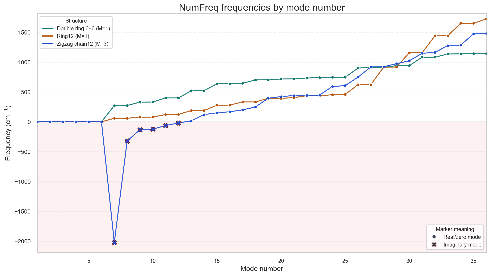
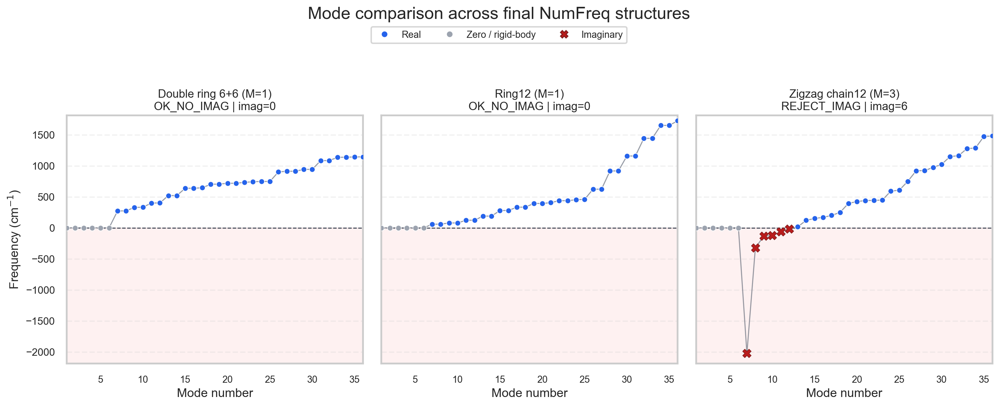
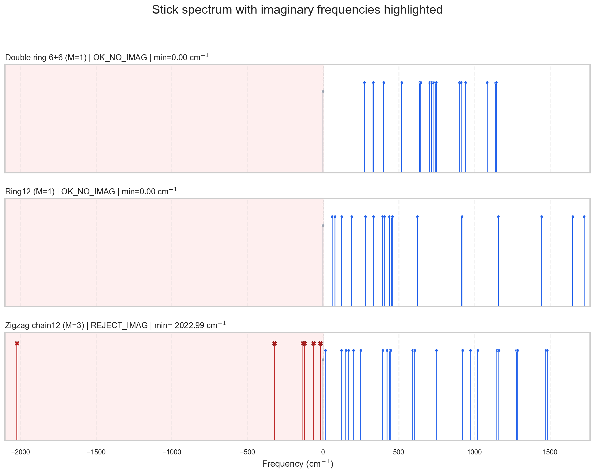
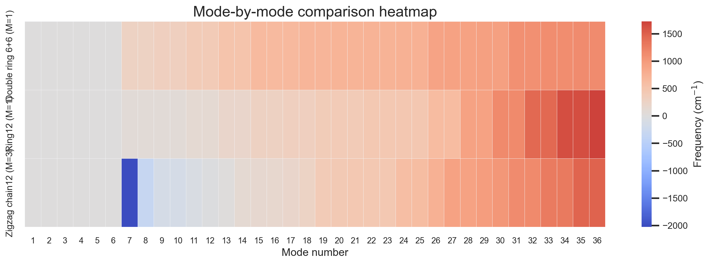

NumFreq mode charts
These charts are built from the current ORCA NumFreq outputs in jobs/03_numfreq.
Imaginary modes are emphasized explicitly, so unstable structures are easy to spot.
| Structure | Status | Modes | Imaginary | Min freq (cm^-1) |
|---|---|---|---|---|
| Double ring 6+6 (M=1) | OK_NO_IMAG | 36 | 0 | 0.00 |
| Ring12 (M=1) | OK_NO_IMAG | 36 | 0 | 0.00 |
| Zigzag chain12 (M=3) | REJECT_IMAG | 36 | 6 | -2022.99 |
Frequencies by mode number
Overlay of all parsed modes across the final NumFreq structures.
Open image
Per-structure mode comparison
Each structure in a separate panel, with real, zero, and imaginary modes separated visually.
Open image
Stick spectra
Frequency-stick spectra with the negative-frequency region highlighted.
Open image
Mode heatmap
Compact comparison of every mode across all final structures.
Open image